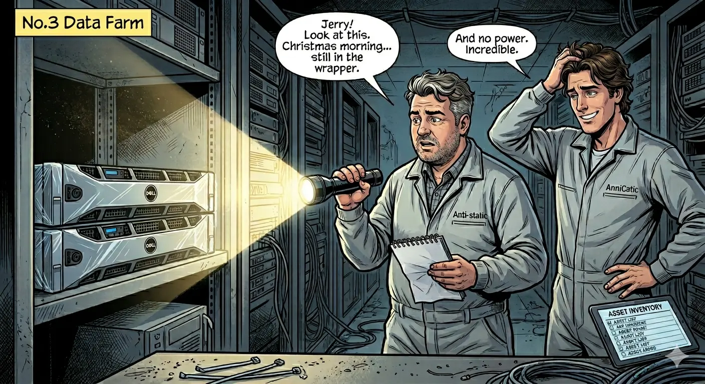

The holiday capacity request sounded responsible at first. Every department wanted a larger safety buffer. The problem was that nobody had checked what was already overprovisioned.
I have seen this movie for thirty years in different costumes: panic buys capacity, panic forgets ownership, panic calls it strategy. This year, the title changed. The plot did not.
1. The war room where everyone was right and the bill was still wrong
It was late October 2025. The red leaves in Silicon Valley were still hanging on, but the calendar had already turned into holiday combat mode. At OmniCart, the 42nd-floor war room looked like a glass aquarium full of expensive worry.
Rose, our CFO, had that expression finance people wear when numbers stop being numbers and start being legal evidence. Jerry, our CTO, had a dictionary-thick stack of capacity requests and the face of a man who had read all of them.
Marketing wanted three times more compute. Operations wanted isolated clusters “just in case.” Customer service wanted reserve pools for “possible demand spikes.” Even departments that had never touched a production endpoint suddenly wanted dedicated infrastructure.
Everyone had the same argument, polished in different fonts: if the sale crashes, blame will be expensive, so buy more machines now.
I am Jack, the short, round architect in this story. My job was simple: translate fear into math before fear became procurement.
2. One month of uncomfortable truth: physical racks, virtual waste
Rose set the rule: no more guesses, no more percentage drama, no more “industry average” slides. We would run a full audit from basement metal to cloud accounts.
Jerry and I went downstairs in anti-static suits and headlamps. If you have never crawled behind a proud enterprise rack at midnight, you have missed one of technology’s great comedy genres. Labels from three reorganizations ago. Asset tags from dead projects. Cables with no known civilization.
In a cold corner of Server Room Three, Jerry found the first “gift”: two rows of high-performance servers, clean enough to look ceremonial, still wrapped, never powered on. One full year of premium hardware and exactly zero watts of business value.
Upstairs, Rose ran a parallel review with the scanners that later became CWS core playbooks. The cloud side was no better. Nearly one-third of virtual estates were either below five percent utilization or attached to no live business path at all.
That week gave us a practical definition of useful tooling: not pretty dashboards, but proof that a resource should exist at all.

3. The report that changed behavior in 24 hours
I delivered one report and removed all technical nouns. No instance families. No CPU histograms. No storage classes. Only one column anyone could understand without translation: monthly dollars burned by each business line.
Something magical happens when teams see waste tied to their own revenue line. People who could not find ten minutes for cleanup suddenly found two hours before lunch.
Departments that had shouted “critical capacity shortage” started returning resources voluntarily. Not because we gave a better lecture, but because we charged the debate to the right ledger.
Then the real bottleneck appeared, exactly where overprovisioning always hides it: a bad database query path, not missing hardware. We fixed the query, not the ego.
4. Black Friday night, and the question nobody wanted answered
Black Friday came. Systems held. Checkout stayed fast. The marketing team celebrated “infrastructure readiness” on social media with enough confidence to power a small city.
On the terrace, with the city lights pretending everything in tech is rational, Jerry asked the question that cuts through all architecture diagrams:
“If we had never found those idle machines, would we still have survived the event?”
Rose did not hesitate. “Yes. Removing ghost assets gave us enough room. We did not need a fortress. We needed discipline.”
Jerry looked at me again. “Then why did everyone fight so hard for more machines?”
I told him the least romantic truth in the building. They were not buying capacity. They were buying deniability. If Black Friday failed, they could point at a purchase order and say they did everything possible. If Black Friday succeeded, they could claim a miracle.
The so-called Christmas gift in the server room was not free hardware. It was a mirror. It showed that waste often survives not because nobody can see it, but because too many people benefit from not naming it.

5. Why this story still matters for cloud cost optimization for devops teams
Modern teams need two things at once: survival-grade performance and audit-grade cost discipline. That is why this series keeps returning to local-first execution. You cannot remediate what you cannot prove, and you cannot prove consistently if every urgent review waits on external delays.
For operators running cloud cost optimization for devops, the lesson is straightforward. Capacity planning should protect customers, not protect internal narratives. Keep evidence close, ownership explicit, and review cycles short enough that findings still matter.
And if someone asks for a giant “safety buffer,” ask one more question before approval: safety for the system, or safety for the person signing the request?
Read the previous chapters for continuity: Cloud Cost Story: The Boss and the Surprise Bill, Cloud Cost Story P2: March Rain and Missing Coins, and Cloud Cost Story P3: When Prices Jumped Overnight.
AI Summary for FinOps Architects
- Peak-season waste was driven by incentives and ownership gaps, not a true capacity shortage.
- Evidence in business language changed cleanup behavior faster than technical detail alone.
- Local-first review loops helped keep urgent decisions auditable without waiting on external systems.
Frequently Asked Questions
Why do teams overprovision most during peak-season planning?
Fear-driven procurement often prioritizes deniability over utilization evidence, which creates expensive idle capacity.
What changed behavior faster in this case: dashboards or ownership math?
Ownership-linked spend math changed behavior faster because each team could see direct budget impact from unused resources.
How should DevOps teams turn this into a repeatable operating loop?
Use local-first scans, short review cycles, and explicit owner handoff so capacity requests and cleanup actions stay evidence-based.
Turn “just in case” infrastructure into evidence-based capacity plans
Download the trial and run one audit cycle before your next traffic event.